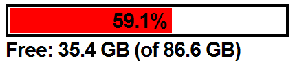

This class in PHP can be used to get the status of any partion on Windows, Mac OS and Linux.
Makes use of disk_total_space and disk_free_space.
Source Code
All source code is online here.
How to use it
require_once('DiskStatus.class.php');
try {
$diskStatus = new DiskStatus('c:');
$freeSpace = $diskStatus->freeSpace();
$totalSpace = $diskStatus->totalSpace();
} catch (Exception $e) {
echo $e->getMessage();
}
There is a more complex example on the source page, which creates the following output (HTML + CSS):
